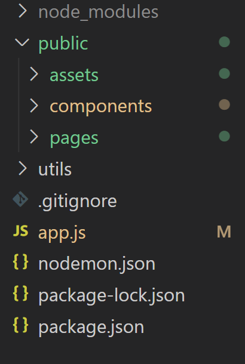

To make code more maintable, readable and easier to collab on Its very important to write clean code and follow coding conventions.
Tools to make it easier to identify and fix issues is to use ESLint which is an open-source utility for javascript and is easy to install in VS code.
Another way to prevent errors and encourage better coding standards is to "use strict" mode. Which is written in the top of the javascript file. This ensure that fx. variable has to be declared or else it will give an error.
To enable a good and clean code structure in a nodejs application and overall. Its good practice to setup a good folder-structure. This makes it easier for yourself but also for other people to maintain the code, test, fix bugs, refactor the code etc.
An important and common Nodejs folder-structure is keeping the serverside and clientside seperat from eachother. Which means public folder contains all clientside material; such as the html pages, css, components used to build the navbar and footer, images and so on. Utiliy can be a good folder to all serversite logic such as an template engine.
